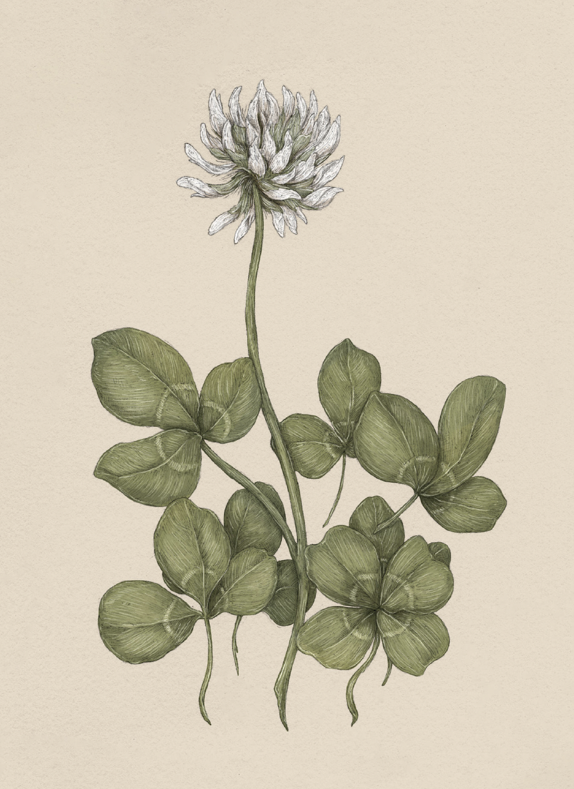

Plate CLOVER
The Language of Flowers
Clover Study

Clover
Trifolium
Definition: A plant associated in floriography with good luck and favorable fortune.
Meaning
Good luck
Origin
Clovers, in particular four-leaf clovers, have been associated with luck for centuries. The ancient
Druids in Ireland believed that carrying a clover allowed one to detect evil spirits approaching.
Similarly, in the Middle Ages, many Irish believed that carrying a four-leaf clover allowed one to
see fairies. In 1620, in the earliest recorded mention of clover's association with luck, Sir John
Melton wrote, "If any man walking in the fields, find any foure-leaved grasse, he shall in a small
while after find some good thing."
Pair With
- Heather and Wheat for good luck with a new business venture
- Apple Blossom and Dandelion to show hope that the recipient's wishes will come true